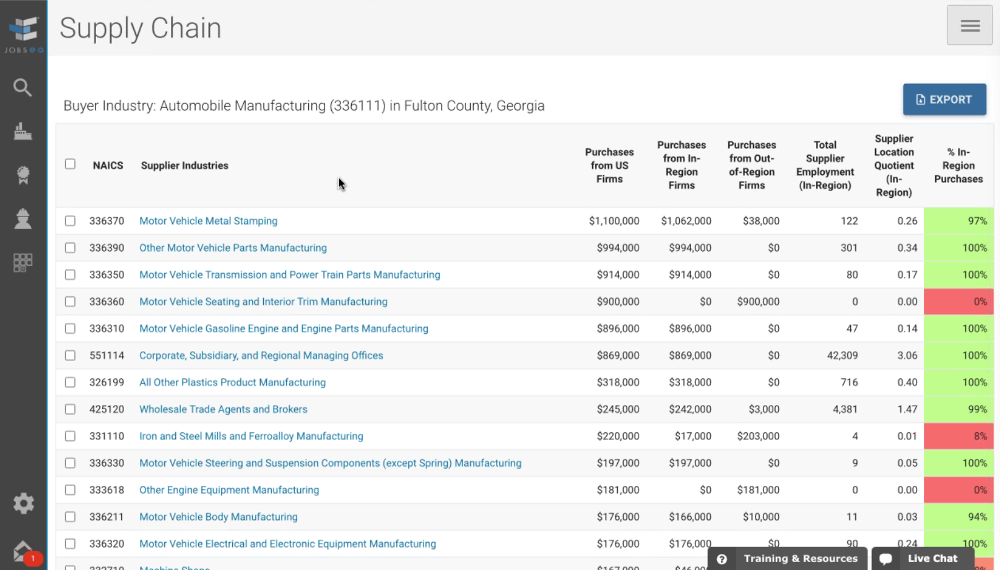

The following industries were provided by economic developers in southwest Georgia as areas involved in auto manufacturing.
Auto Parts Manufacturing
336111 - Automotive Manufacturing
336330 - Motor Vehicle steering and suspension manufacturing
336340 - Motor Vehicle braking and component systems manufacturing
336360 - Motor Vehicle seating and interior trim manufacturing
336370 - Motor Vehicle metal stamping manufacturing
336390 - Other Motor Vehicle Parts Manufacturing
333613 - Mechanical power transmissions equipment manufacturing
336412 - Aircraft engines and engine parts manufacturing
336413 - Other aircraft parts and auxiliary equipment manufacturing
335910 - Battery Manufacturing
335912 - Primary battery manufacturing
339110 - Medical equipment and supplies manufacturing
333111 - Farm machinery and equipment manufacturing
313110 - Fiber, yarn and thread mill manufacturing
313210 - Broadwoven Fabric Mills
314110 - Carpet and rug mill manufacturing
325211 - Plastics material and resin manufacturing
325520 - Adhesives manufacturing
326112 - Plastics packaging film manufacturing
326220 - Rubber and plastics hoses and belt manufacturing
331221 - Rolled steel shape manufacturing
332211 - Forging and stamping
Parts manufacturing industries by county
Internal Supply Chain Data
If your organization subscribes to a service for economic developers, check if you can export a CSV file contaiing supply chain details by NAICS.

Source:
Chmura JobsEQ - 2020 Labor Market Data - Also available without JobsEQ addon